Astronomy underfoot
The Sky Viewpoint
THE SKY VIEWPOINT
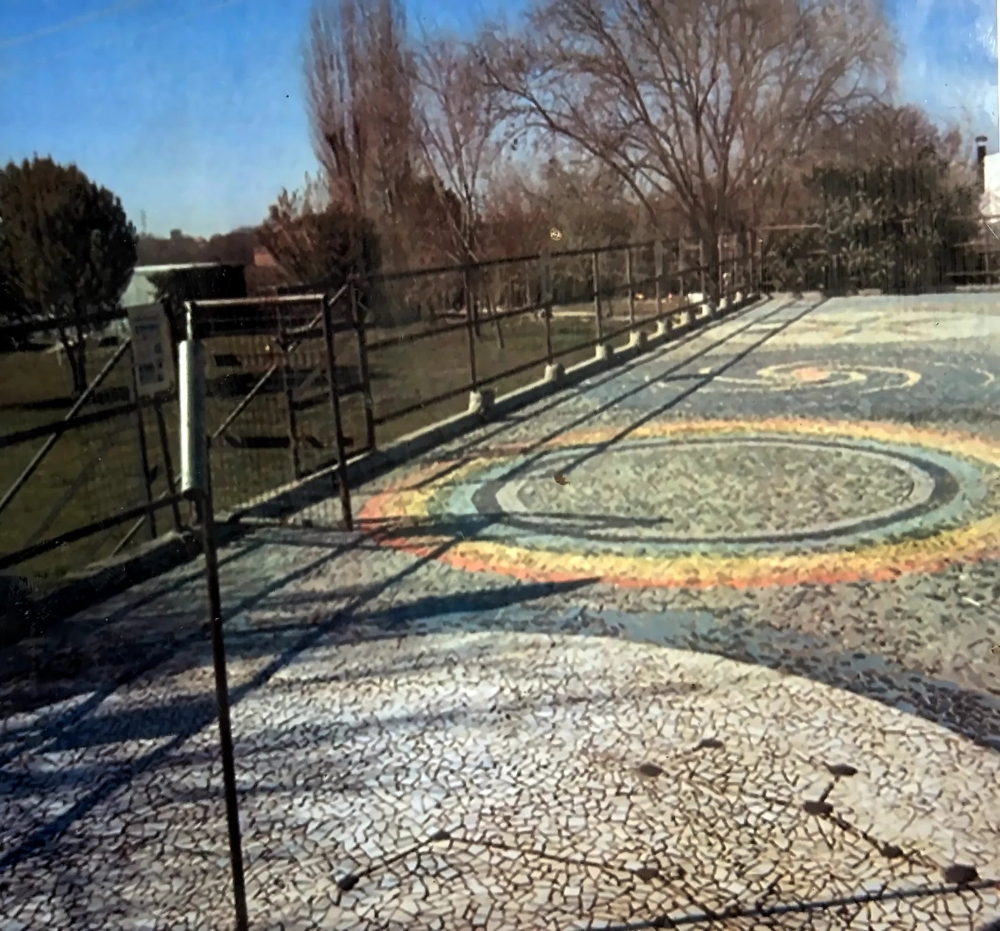
CONSTELLATIONS
ALL YEAR ROUND
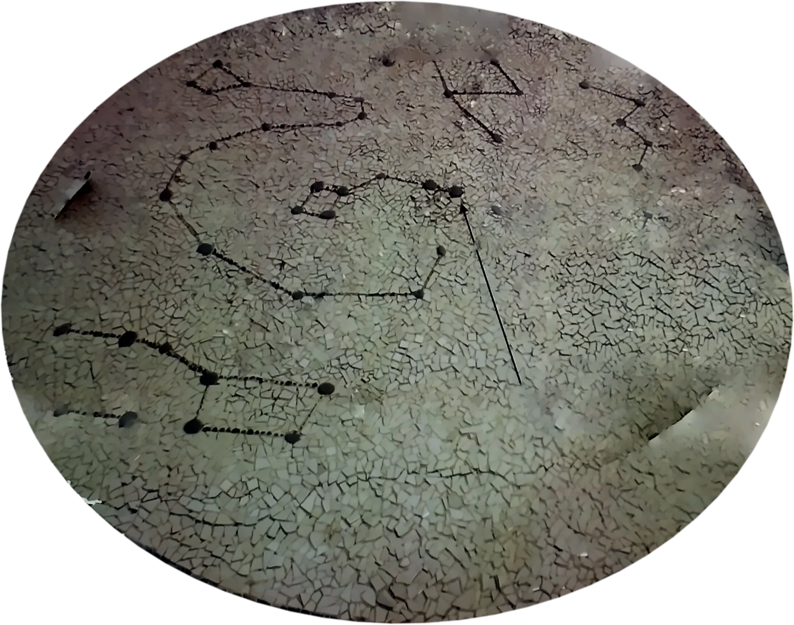
Cepheus
Cassiopeia
Draco
Little Bear
Great Bear
Pole Star (north)
SIGHTING POINT
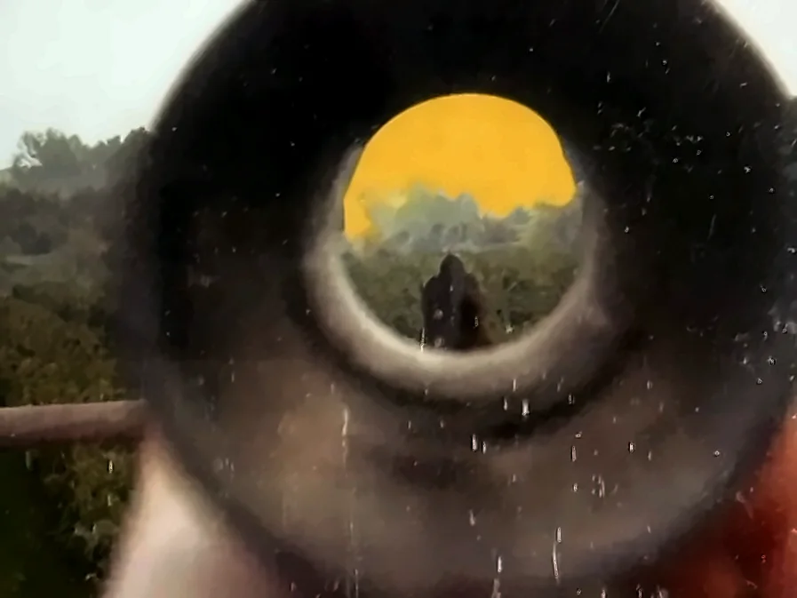
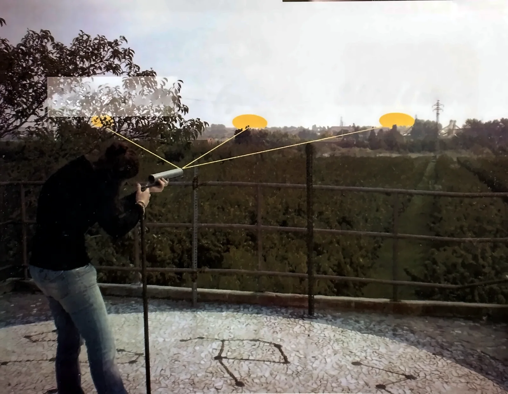
Summer solstice
Equinox
Winter solstice
Hélène watches the sun rise
THE RAINBOW

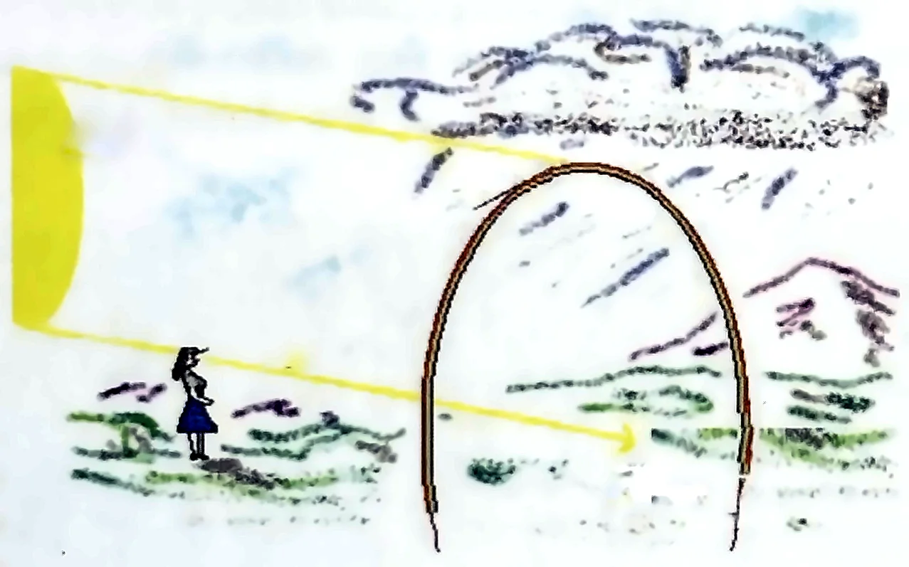
Sun
Earth
Sunlight reflected by drops of water
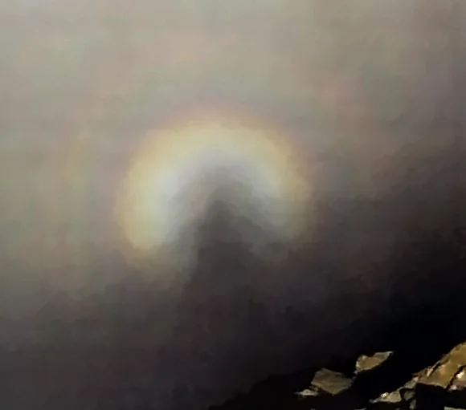

You can tell the time.
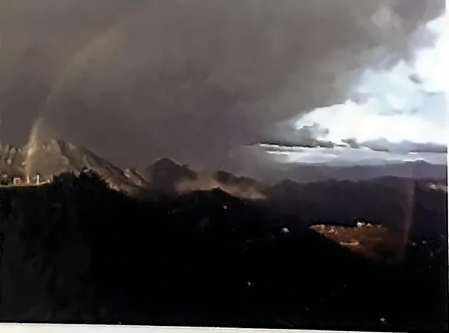
WATER CURTAIN
The water curtain is in the zip-line area, at the bottom of the slope.
It completes the viewpoint and proves that a rainbow is not an arc but a circle. You can check it for yourself.
Always choose a sunny day.
Stand in front of the water curtain in the morning and you will have a rainbow in front of you.
Come down the zip line in the afternoon and there will be a rainbow ahead of you.
But stand under the curtain at midday, with the sun right above you, and the rainbow becomes a circle drawn at your feet that moves and dances with you, and only with you. It is fascinating to see that every person has their own.
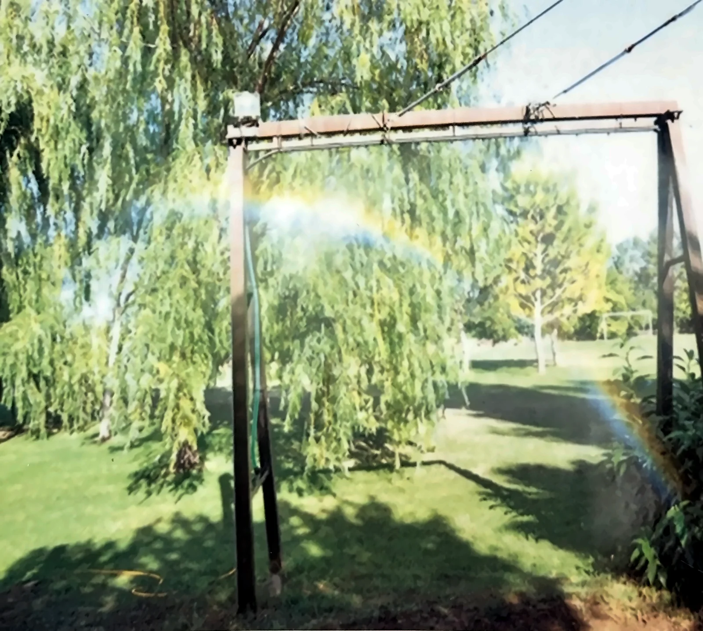
THE MILKY WAY

The Earth
Our solar system
The Milky Way
(our galaxy)
Our solar system
The Orion Arm
Thousands of galaxies
The Universe
THE COMPASS ROSE
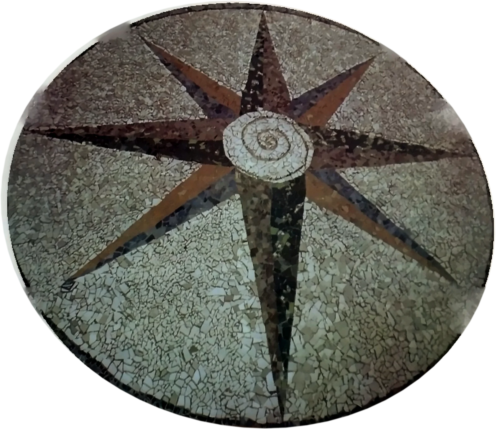
Tramuntana (N)
Mestral (NW)
Gregal (NE)
Ponent (W)
Llevant (E)
Garbí (SW)
Xaloc (SE)
Migjorn (S)
HOW THE WIND MOVES

Waterspout

Cyclone and anticyclone
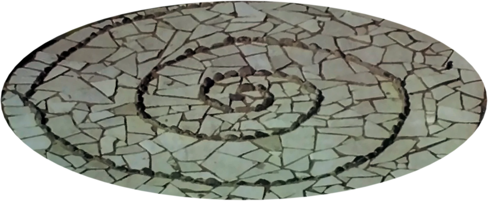
Hurricane

Bird migrations
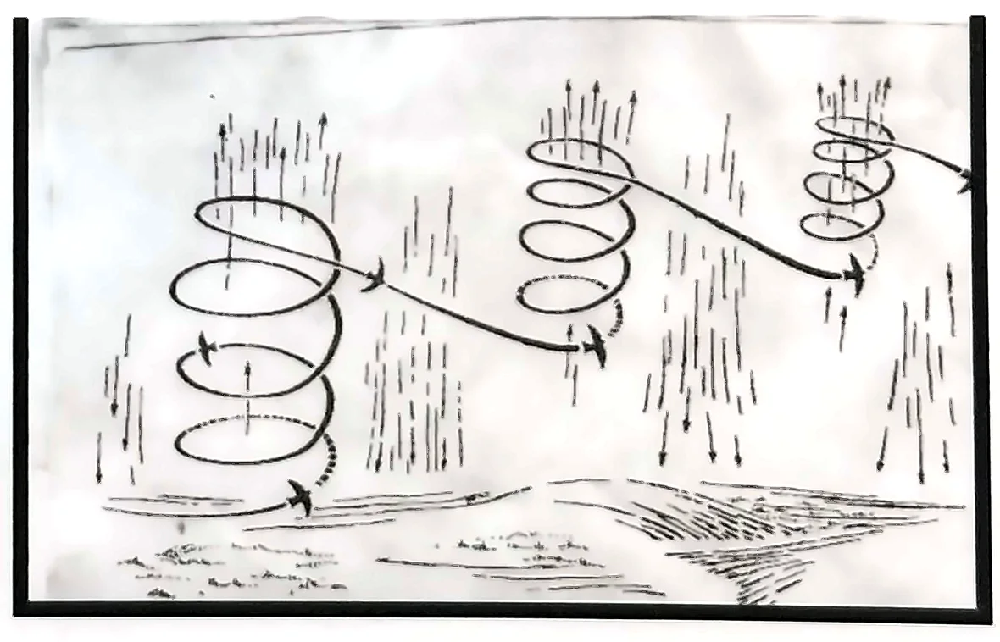
PHASES OF THE MOON

Earth
Sun
Moon

“Waxing quarter, horns to the east”
“Waning quarter, horns ahead”
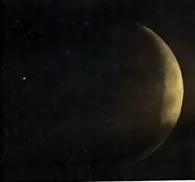
First quarter
The moon is growing when we see it in the afternoon
Last quarter
The moon is shrinking when we see it in the morning

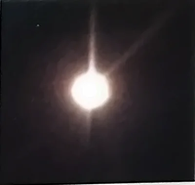
The full moon rises in the east
When it is full it rises before the sun has set
Turn the pages with the arrows, by swiping, or by tapping the edge of the page.